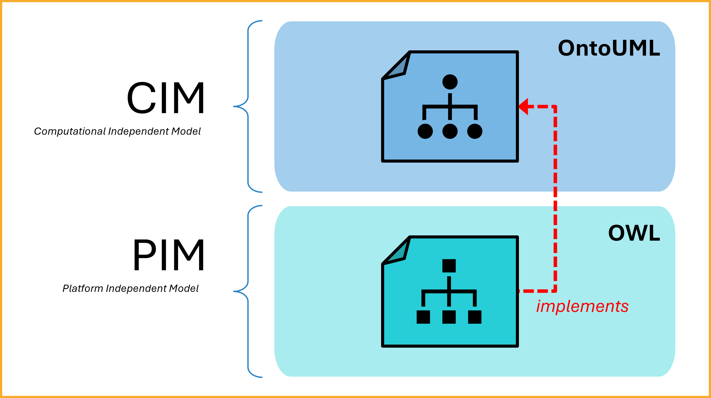
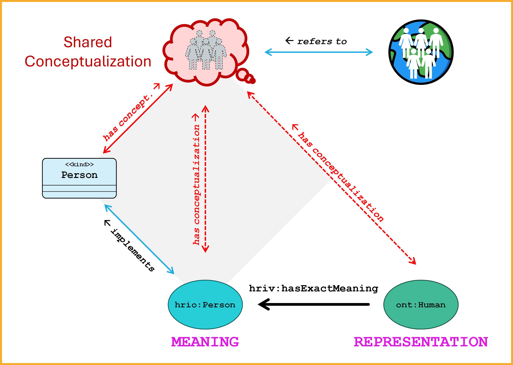
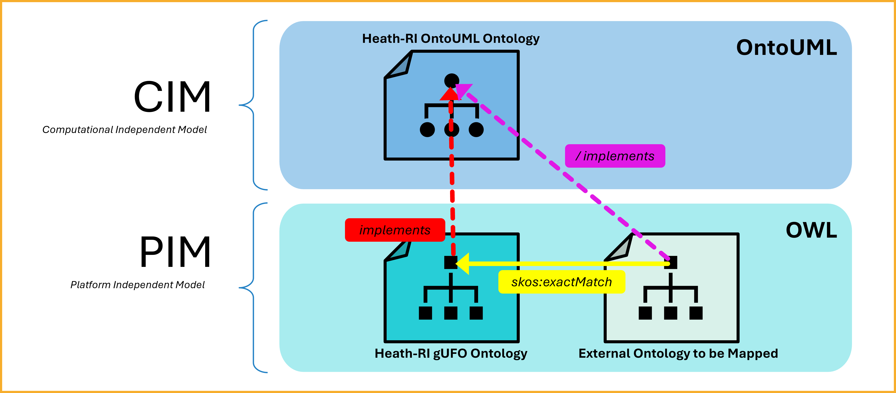
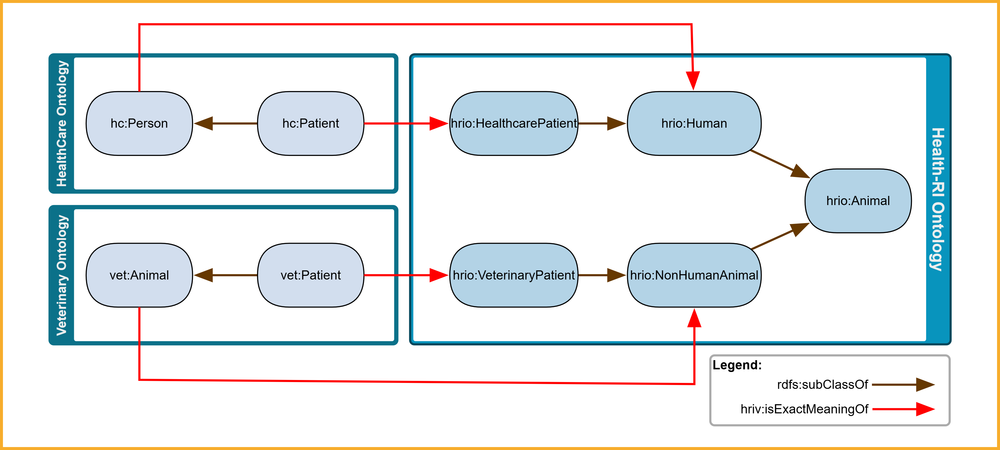
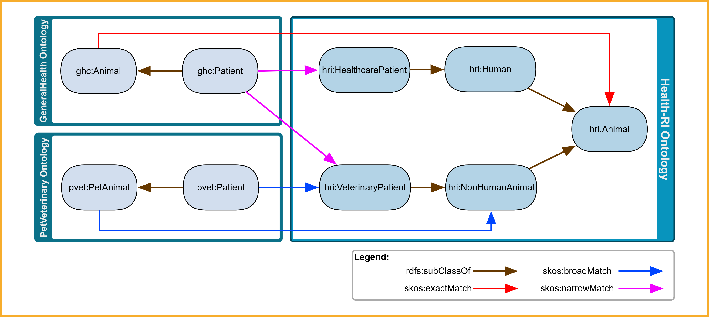
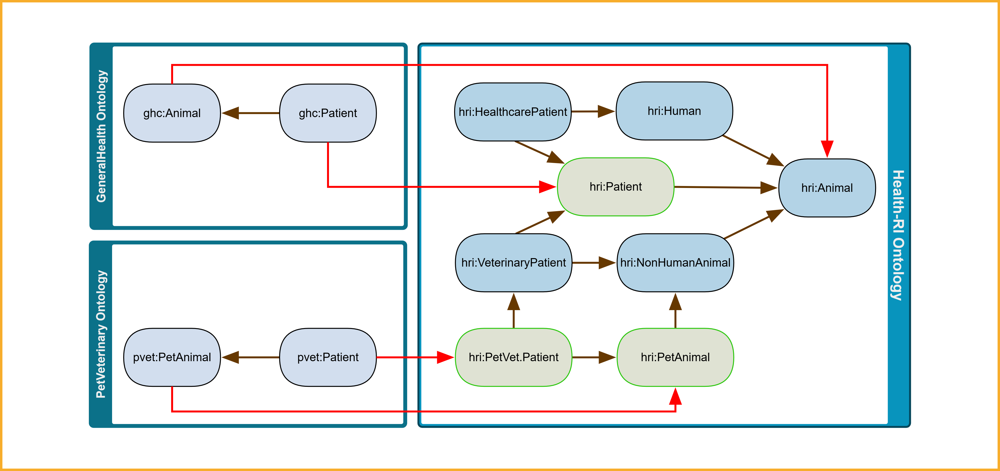

Semantic Mapping Strategy
Model-Driven Techniques: MDA, MDD, and MDE
The Model-Driven Architecture (MDA), defined by the Object Management Group (OMG), is an architectural framework that structures system modeling into abstract layers—promoting interoperability, portability, and reuse by separating domain concerns from technical implementation [1], [2].
- Model-Driven Development (MDD) denotes development processes guided by high-level models; MDA is one such OMG-conforming realization [2].
- Model-Driven Engineering (MDE) is an overarching paradigm including model creation, transformation, code generation, reverse-engineering, and lifecycle evolution [2].
OMG defines three main abstraction layers [1], [2]:
- Computation-Independent Model (CIM): captures domain context and system requirements in business terms, without specifying implementation structure.
- Platform-Independent Model (PIM): defines structural and behavioral aspects—such as classes and relationships—in a technology-agnostic way, without committing to any particular implementation platform.
- Platform-Specific Model (PSM): refines the PIM with technology-specific information (e.g. database schemas, APIs, frameworks) to enable implementation.
CIM and PIM in Our Ontology Artifacts
Within our semantic interoperability framework:
- The HRIO OntoUML reference model sits at the CIM layer: it defines conceptual domain entities and relationships grounded in the Unified Foundational Ontology (UFO) [3].
- The HRIO gUFO/OWL implementation (gUFO-based OWL implementation of UFO) resides at the PIM layer: it expresses those same concepts as an executable OWL 2 DL ontology, suitable for reasoning and integration with Semantic Web tools [3].
 Figure 1: HRIO OntoUML (CIM) defines the semantics that are implemented in HRIO gUFO/OWL (PIM).
This separation is crucial because it ensures clarity about what we mean versus how we represent it. By explicitly considering this, each element in the ontology has a well-defined meaning behind it, rather than being just an arbitrary label or technical construct. By identifying the original meaning (conceptualization) of "Person" (for example) and separating it from any one representation, we follow the prescription that real-world semantics should guide the modeling. This aligns with knowledge engineering practices: every knowledge base or ontology implicitly commits to some conceptualization of the domain, and making that conceptualization explicit is critical for correctness.
This visual clarifies that HRIO OntoUML provides the conceptual meaning, which the HRIO gUFO/OWL artifact operationalizes—while preserving semantic integrity across layers.
Roles of the Artifacts
| Artifact | Layer | Purpose | Practical Role |
|---|---|---|---|
| HRIO OntoUML reference model | CIM | Provides clarity about domain-specific concepts by offering clear and precise definitions, supporting conceptual validation and enabling expert communication | Serves as a semantic map and meaning contract to align domain terms for interoperability |
| HRIO gUFO/OWL implementation | PIM | Provides machine-readable semantics, supporting automated reasoning and tool interoperability | Enables integration and alignment of RDF-based artifacts within semantic web and linked data contexts |
Maintaining both artifacts ensures clear traceability from domain concepts (HRIO OntoUML/CIM) to executable ontology structures (HRIO gUFO/OWL/PIM) [3].
Semantic Reference: Defining CIM-to-PIM Semantics
In the Health-RI architecture, every class in the HRIO gUFO/OWL ontology (PIM) is implicitly semantically defined by its counterpart in the HRIO OntoUML reference model (CIM). For example, the class hrio:Person in HRIO gUFO/OWL borrows its semantics from the Person class in the HRIO OntoUML model. Because the CIM is not computational, this semantic linkage remains implicit and is not formally encoded [3].
Why the CIM-PIM link matters
Even though the HRIO OntoUML model is not executable, it defines the core meaning that HRIO gUFO/OWL classes implement. This semantic grounding improves trust, clarity, and alignment in data integration.
Conceptualization, Implementation, and Mapping
To make the semantic link between the HRIO OntoUML reference model, the HRIO gUFO/OWL implementation, and external ontologies more explicit, it is useful to consider the semiotic perspective shown in Figure 2.

Figure 2: HRIO OntoUML (CIM) provides the conceptualization, which HRIO gUFO/OWL (PIM) implements. External ontologies aligned through the Health-RI Mapping Vocabulary (HRIV, hriv) can then be interpreted as being linked to the underlying conceptualization defined in HRIO OntoUML. This supports keeping meaning and representation consistent across models and ontologies.
In this Figure:
- Real-world referents (globe and people, top-right): indicate the actual entities in the domain (e.g., human beings) that the conceptualization is about. These are the things to which all conceptualizations ultimately refer.
- Shared Conceptualization (top, cloud icon): represents the underlying domain meaning (e.g., Person) that is shared across different artifacts. This is the abstract conceptualization formalized in the HRIO OntoUML model, implemented computationally in HRIO gUFO/OWL, and explicitly anchored when an external ontology concept is mapped through the Health-RI Mapping Vocabulary (HRIV).
- HRIO OntoUML class (
<<kind>> Person, left): formalizes this conceptualization at the CIM layer, providing precise ontological grounding (in UFO) for what it means to be a Person. When we create a class<<kind>> Personin the HRIO OntoUML model, we are doing more than drawing a box labeled "Person." We are encoding the meaning of Person in a structured way that the modeling language understands. In this sense, the HRIO OntoUML concept plays the role of a meaningful representation: it carries intentional meaning (e.g., the notion of a person as an entity with essential properties, understood via UFO's category of Kind) and it is also an explicit element in a model. - HRIO gUFO/OWL implementation (
hrio:Person, bottom): expresses that same conceptual meaning in computational terms at the PIM layer, making it machine-readable and interoperable. HRIO gUFO/OWL classes always inherit their semantics from the HRIO OntoUML concepts they implement. - External ontology concept (
ont:Human, right): denotes how a third-party ontology may define a similar concept. When mapped via the Health-RI Mapping Vocabulary (e.g.,hriv:hasExactMeaning), such an external concept is explicitly linked to the HRIO gUFO/OWL implementation and should be understood as indirectly representing the HRIO OntoUML conceptualization (derived from the combination of implementation and mapping assumptions).
Taken together, the diagram shows that (i) the HRIO OntoUML model provides the shared conceptual meaning, (ii) the HRIO gUFO/OWL implementation operationalizes this meaning computationally, and (iii) external mappings assert how third-party ontologies are intended to relate to this meaning.
This supports that when a partner ontology concept is mapped to the Health-RI ontology using hriv, it is not only aligned with the HRIO gUFO/OWL class but is intended to embody the same conceptualization originally defined in the HRIO OntoUML model. In this way, interoperability extends beyond structural matching to the preservation of intended meaning.
OntoUML and OWL are complementary in that they operate at different knowledge representation levels. OntoUML is a conceptual modeling language—closer to human cognition and domain semantics—whereas OWL is a computational ontology language—suited for machine tractability and reasoning. Designing at the conceptual level first ensures the meaning is captured correctly before committing to OWL's computational restrictions.
Theories of formal semantics tell us that an OWL class gets its meaning from two sources: the formal semantics of the logic (which treats Person as a set of individuals with certain properties) and the intended interpretation by the modeler (the conceptualization of Person). By explicitly maintaining the link (hriv:hasExactMeaning) between ont:Human and hrio:Person (which is anchored in the conceptualization), we ensure that the formal artifact is interpreted correctly. By grounding both the HRIO OntoUML and HRIO gUFO/OWL representations in that same conceptual meaning, we mitigate the risk of the OWL ontology drifting from the original intent. This establishes a traceability of semantics—from the real-world domain, to the conceptual model, to the formal ontology—which is a characteristic of rigorous ontology engineering. Nothing is introduced in OWL that was not conceptually established first.
Aligning Third-Party Ontologies
Our common semantic reference model (HRIO) provides the shared meanings to which external concept definitions can be mapped. When another ontology defines ont:Human, it may be semantically aligned with our hrio:Person. To make this relationship explicit, a hriv:hasExactMeaning link can be asserted—either by the Health-RI mapping team (e.g., in SSSOM format), or by the owners of the external ontology within their artifact—signifying that the external concept's intended semantics are fully and precisely defined by that linked HRIO meaning.
There are two possible approaches for creating and maintaining such mappings:
-
Mappings performed by the Health-RI team: In this case, mappings are created by Health-RI's semantic modeling team and provided in SSSOM format. This is the default strategy when the external ontology or resource is publicly available or beyond Health-RI's editorial control (e.g., national standards, web-accessible vocabularies). These mappings are non-invasive, meaning they do not alter the original artifacts but describe their alignment externally. For details on how these mappings are published, versioned, and curated, see the SSSOM Mapping Set.
-
Mappings authored by external partners: If the external artifact is under the editorial responsibility of a partner or collaborating organization, that party may directly include the mappings within their ontology. In this case, the mappings are embedded into the source artifact itself (e.g., adding
hriv:hasExactMeaningto their RDF model pointing to Health-RI concepts), offering tighter integration and long-term maintainability by the artifact owner.
These complementary approaches enable semantic alignment in both centrally controlled and federated interoperability scenarios.
Mapping Set Structure & Stable Artifacts
See the SSSOM Mapping Set page for the structure, schema, and stable w3id artifact URIs.
Browse the Created Mappings
Explore and visualize the mappings that have already been created in the Mappings page. (Convenience view; for normative artifacts see the Mapping Set page.)
Info
For details about the schema and contribution process, see the SSSOM Mapping Set.
Only one hriv:hasExactMeaning allowed
Each concept may have exactly one hriv:hasExactMeaning to a Health-RI concept—and only when the expression's intended semantics are fully and precisely defined by a specific linked HRIO meaning. Using more than one hriv:hasExactMeaning for the same concept is not allowed, as it introduces ambiguity.

Figure 3: If an external ontology defines External:Patient which we map via hriv:hasExactMeaning to hrio:Patient—and hrio:Patient is semantically defined by its counterpart in the HRIO OntoUML model—then External:Patient is intended to be interpreted as embodying that same HRIO conceptualization.
Mapping Properties for Cross-Scheme Alignment
The Health-RI Mapping Vocabulary was created to provide a set of mapping properties designed for expressing alignments between concepts in different concept schemes (e.g. external vocabularies and our Health-RI ontology). The principal properties are: hriv:hasExactMeaning, hriv:hasBroaderMeaningThan, and hriv:hasNarrowerMeaningThan.
The Health-RI mapping relations are declared as specializations of SKOS mapping properties. Importantly, this does not change the semantics explained above: Health-RI relations remain meaning-centric (intentional) while SKOS relations are similarity mappings between extensionally defined categories. The rdfs:subPropertyOf alignment simply ensures that whenever you assert an hriv mapping, a reasoner (or any RDFS-aware tool) can automatically derive the corresponding SKOS mapping. This improves interoperability with tools that expect SKOS, while preserving the stricter intent of the Health-RI semantics.
Entailment summary (via rdfs:subPropertyOf):
hriv:hasExactMeaning⟶skos:exactMatchhriv:hasBroaderMeaningThan⟶skos:narrowMatchhriv:hasNarrowerMeaningThan⟶skos:broadMatch
Our Strategy: Choosing the Right Mapping Property
Need a quick mapping draft?
Use the HRIO Mapping Assistant to propose HRIO candidate targets and the most appropriate HRIV predicate (hriv:hasExactMeaning, hriv:hasBroaderMeaningThan, hriv:hasNarrowerMeaningThan) with confidence and evidence snippets.
Use it as a drafting aid, not as an authority. You still need to justify predicate choice based on definitions and scope (not label similarity) and follow the policy on exact-meaning uniqueness.
hriv:hasExactMeaningis used when the expression's intended semantics are fully and precisely defined by a specific linked HRIO meaning.- Each external concept may have only one
hriv:hasExactMeaning.
- Each external concept may have only one
hriv:hasBroaderMeaningThanis used when the external expression is broader in scope than the HRIO meaning it is linked to (i.e., it includes the linked HRIO meaning but is not limited to it).hriv:hasNarrowerMeaningThanis used when the external expression is narrower in scope than the HRIO meaning it is linked to (i.e., it is limited to a subset of what the linked HRIO meaning covers).
Clarifying hriv:hasExactMeaning semantics
Although hriv:hasExactMeaning expresses a strong meaning-level commitment, it should not be interpreted as an OWL class axiom (e.g., it does not entail owl:equivalentClass, owl:sameAs, or rdfs:subClassOf between mapped classes). In OWL implementations, mapping assertions can be expressed as object-property assertions between individuals denoting expressions and meanings (with OWL 2 DL punning when class IRIs are used).
In contrast to hriv:hasExactMeaning, both hriv:hasNarrowerMeaningThan and hriv:hasBroaderMeaningThan allow multiple mappings per concept to express partial or hierarchical semantic overlaps.
These mappings are used when an exact-meaning alignment is not justified (or not available): hriv:hasBroaderMeaningThan and hriv:hasNarrowerMeaningThan make the direction of semantic mismatch explicit, so integrators avoid treating mapped concepts as interchangeable.
Visual Example: Exact Semantic Alignment

Figure 4: External ontologies (e.g., HealthCare and Veterinary) map their local concepts to reference concepts in the Health-RI Ontology via hriv:hasExactMeaning (red). These reference concepts are also semantically structured via rdfs:subClassOf (brown), enabling consistent classification across domains.
This figure illustrates how concepts such as hc:Patient and vet:Patient are mapped to hrio:HealthcarePatient and hrio:VeterinaryPatient respectively. These are in turn subsumed by higher-level concepts like hrio:Human or hrio:NonHumanAnimal, ultimately aligning under hrio:Animal. This modeling strategy ensures that semantic alignments preserve domain distinctions while enabling unified interpretation under a shared reference ontology.
How to assert an exact match in your OWL file
To assign that a concept in your ontology has its semantics defined by a concept in the latest version of the Health-RI Ontology, use hriv:hasExactMeaning as shown below:
hc:Patient hriv:hasExactMeaning <https://w3id.org/health-ri/ontology#HealthcarePatient> .
Or, if you've defined the prefix hrio: <https://w3id.org/health-ri/ontology#>, you can simply write:
hc:Patient hriv:hasExactMeaning hrio:HealthcarePatient .
To align with a specific version of a Health-RI Ontology's concept (e.g., v2.0.0), use:
hc:Patient hriv:hasExactMeaning <https://w3id.org/health-ri/ontology/v2.0.0#HealthcarePatient> .
Visual Example: Broader and Narrower Semantic Alignments

Figure 5: Mapping external concepts from GeneralHealth (ghc) and PetVeterinary (pvet) ontologies to the Health-RI ontology. This example evolves from Figure 4 by incorporating hriv:hasNarrowerMeaningThan (magenta) and hriv:hasBroaderMeaningThan (blue) mappings in addition to hriv:hasExactMeaning (red).
ghc:Patient hriv:hasBroaderMeaningThan hrio:HealthcarePatientandghc:Patient hriv:hasBroaderMeaningThan hrio:VeterinaryPatient. The conceptPatientin the GeneralHealth ontology has broader meaning than the two target classes in the Health-RI Ontology.pvet:Patient hriv:hasNarrowerMeaningThan hrio:VeterinaryPatient. Pet-veterinary patients have a more restricted meaning than that of Health-RI's veterinary patients.pvet:PetAnimalis linked viahriv:hasNarrowerMeaningThantohrio:NonHumanAnimal, signaling that the external concept has narrower meaning.- The figure also maintains
hriv:hasExactMeaningmappings for cases where an exact-meaning alignment applies (e.g.,ghc:Animalandhrio:Animal). - Internal hierarchical structure is preserved via
rdfs:subClassOfto allow consistent classification across ontologies.
This more flexible mapping strategy supports gradual alignment of external ontologies to our reference model even in cases where semantic overlap is partial rather than complete.
How to assert broader or narrower mappings in your OWL file
After having defined the hriv prefix, to express an approximate mapping using hriv:hasNarrowerMeaningThan or hriv:hasBroaderMeaningThan, use:
ghc:Patient hriv:hasBroaderMeaningThan hrio:VeterinaryPatient .pvet:PetAnimal hriv:hasNarrowerMeaningThan hrio:NonHumanAnimal .
You may also reference a specific version using the full ontology's URI (e.g., for v2.0.0):
ghc:Patient hriv:hasBroaderMeaningThan <https://w3id.org/health-ri/ontology/v2.0.0#VeterinaryPatient> .
Visual Example: Completing the Ontology via Semantic Gaps

Figure 6: Following the scenario from Figure 5, new intermediate concepts (in green) were added to the Health-RI ontology to bridge semantic gaps and enable the replacement of approximate mappings (hriv:hasNarrowerMeaningThan, hriv:hasBroaderMeaningThan) with exact ones.
In cases where an external ontology cannot be mapped via hriv:hasExactMeaning due to a lack of equivalent concepts, we encourage internal teams and external partners to contact the Health-RI modeling team. By collaboratively extending the reference ontology with missing intermediate concepts, we support:
- The replacement of
hriv:hasNarrowerMeaningThanandhriv:hasBroaderMeaningThanwithhriv:hasExactMeaning, - A more complete and semantically precise reference model,
- And clearer, more actionable mappings for downstream reasoning and integration.
In the figure above, concepts like hrio:PetVet.Patient and hrio:PetAnimal were introduced to bridge the gap between pvet:Patient/pvet:PetAnimal and broader Health-RI categories. These new concepts enable the creation of precise hriv:hasExactMeaning relationships, improving the coherence and utility of both the reference ontology and the external ontology being mapped.
References
[1] Object Management Group. MDA Guide rev. 2.0. OMG Document ormsc/14-06-01, 2014. Access [2] Brambilla, M., Cabot, J., Wimmer, M. Model-Driven Software Engineering in Practice. Morgan & Claypool, 2017. [3] Guizzardi, G. On Ontology, Ontologies, Conceptualizations and the Reality of Categories. Applied Ontology, 16(2), 2021.